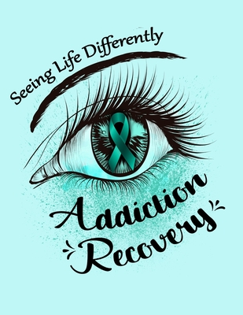
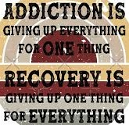

Some of the best quotes:
"Just remember your past is a lesson not A life sentence"
"Time takes Time"
"Let go Let God"
"One day at a time"
"One minute at a time"


More great quotes:
"Recovery is about Progression, not Perfection"
"Just for today"
"Easy does it"
"Do the next right thing"
"Your past is a lesson, not a life sentence"